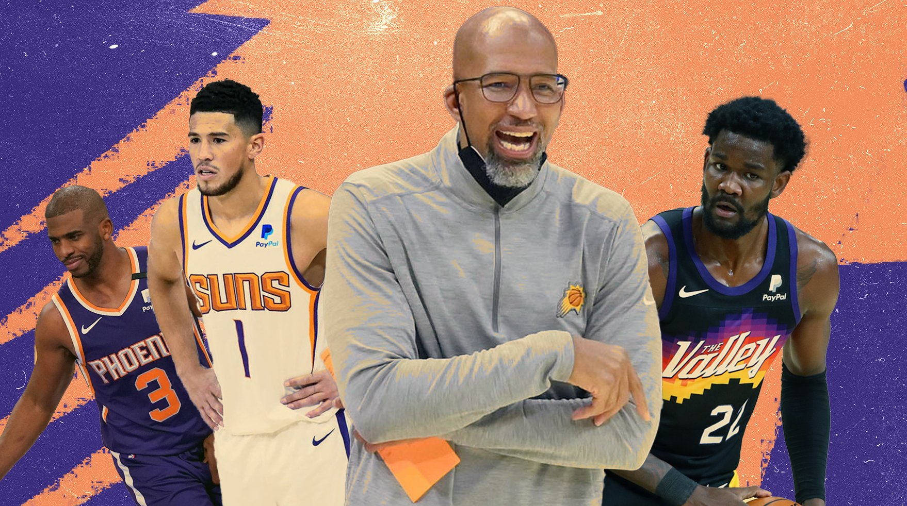

Vale to the 2021 Phoenix Suns
The Suns fell short of the ultimate goal, missing out on an NBA championship, but this season they have given so much to their fans. Dante Boffa takes a moment to reflect on his experience of the franchise’s journey. Sean Carroll Illustration
Before the playoffs started, I said on The Deep Two NBA Podcast that I’d be over the moon if the Phoenix Suns won even one game in their first-round series against the LA Lakers.
One win in the playoffs, that was all I was asking. I’d never seen a Suns playoff game, and I wasn’t sure when I was going to see one again, so all I wanted was one win to cherish. What happened next was more than I’d ever imagined.
I don’t want to sound soppy, but a Finals appearance was genuinely beyond my comprehension. I’ve been a Phoenix fan since the dying days of the Steve Nash era. My first season watching the team was 2011, the year after a Western Conference Finals defeat to the Lakers, and the team’s first season without Amar’e Stoudemire, who had left for New York. Nash kept those average Suns teams afloat through sheer will, somehow making rag-tag collections of late-career wings Grant Hill, Hedo Turkoglu, Jason Richardson and Hakim Warrick look serviceable.
When Nash decided he needed to leave town to win the ring that would crown his career, the team didn’t stand in his way, and he was traded to the Lakers in 2012. Whilst Nash’s body betrayed him in LA, I watched the Suns enter a tailspin. It didn’t seem like a tailspin from close range, though.
I was so close to it that I couldn’t see it for what it was.
Earl Clark is going to be the next big thing, I’m telling you, man. Robin Lopez will be a top-ten centre, just give him some time. Kendall Marshall is the heir to Nash’s pass-master throne. When the 2012 offseason yielded a move for Michael Beasley and a fat offer sheet for New Orleans’ Eric Gordon, I was ecstatic, I did cartwheels. A young team worth rooting for!
That phrase characterised the next eight years of my NBA fandom. I became very good at looking for the little things, and my NBA experience became narrower. My view of the league was filtered through Eric Bledsoe’s tenuous All-Star case, the gimmicky three-guard lineup featuring Bledsoe, Goran Dragic and Isaiah Thomas and the frontcourt of the future in Marquese Chriss and Dragan Bender. I’ve never been able to divest myself of this team and simply enjoy the rest of the league.
Every offseason, I donned my fool’s cap and decided this was the year we’d turn it all around. Signing 32-year-old Tyson Chandler as free agency bait for LaMarcus Aldridge? That’s fine. Giving Brandon Knight a juicy extension after trading multiple firsts for him? Nice. Drafting Bender and trading up for Chriss in 2016, or drafting Josh Jackson fourth in 2017? The frontcourt of the future.
When it became clear, yet again, that this year was not the year we’d turn it all around, I grimaced and tuned in anyway. I looked for the smallest signs of progress. Jackson shot 38 percent on three-point shots from January to April of his rookie season; that was enough to tide me over until the next season, never mind those smatterings of thunderous Chriss dunks.
The Suns fired their coach three games into a season, hired Luka Doncic’s national team coach, secured the number one pick in Luka’s draft, took Deandre Ayton over Luka and then fired Luka’s national team coach after one miserable season. I lost hope.
This season’s Suns finished 51-21 and made the NBA Finals. Even though the Suns lost, it’s the sort of thing that makes fandom worth the time. Devin Booker has been exceptional for years now, but watching him propel this franchise to the postseason has been such a remarkable return on my emotional investment. The addition of Chris Paul brought a sense of control and professionalism lacking since the ill-fated departures of Dragic and Bledsoe. Paul stepped into the Brandon Knight/Tyler Ulis/Elie Okobo vacuum and Booker, Ayton and Mikal Bridges turned in the best seasons of their young careers.
Watching the Point God manipulate and dictate the Suns’ postseason run was magical for me, because for so long this team, even at its best, was nothing but a thrashing, writhing entity of mislaid potential. This season’s Suns were a fully formed, functioning team in a way that no Phoenix squad has been in the last decade.
James Jones was generally derided prior to this season as a general manager in the Sacramento Kings mould: having no idea. He drafted Ayton over Luka, took Cam Johnson twenty spots too high and salary dumped TJ Warren in the worst way imaginable. But somehow, all of his decisions have come to pass, and he deserves so much credit. Perhaps his most important decision, aside from trading for Paul, was to hand the coaching reins to Monty Williams.
The players love Monty, he’s a savvy play-caller and a supreme motivator. Over the course of the season, he melded Booker and Paul into a single backcourt essence, convinced Ayton to commit to playing defence and rolling hard and unleashed Bridges as an off the bounce threat. He harnessed Jae Crowder’s vociferous energy and channelled it into his young charges, making them play hard and tough, giving them an edge. With Game 6 sealed in LA, Booker ran the court to flush a dunk and let the Lakers know all about it as the final buzzer sounded. This team had moxie.
As the Suns pushed deeper into the postseason, I started to shed the cautious optimism that has characterised my NBA fandom, and I began to believe. When we swept the Denver Nuggets, with Ayton dominating like he never had before, I believed we could go all the way. Shedding the LA Clippers in a chippy series and blowing out the Milwaukee Bucks in the first two games of the Finals had me at the mountaintop. Things changed, obviously, and it’s Giannis and the Bucks that lifted the Larry O’Brien Trophy.
I took a day to be sad and hurt because I don’t know if I’ll ever see a Suns team like this again. For so long I’ve believed that it wasn’t possible to see my team on the biggest stage, and my first instinct was to worry that it would be another basketball lifetime before they were back. But after that day, I was just grateful. I’ve followed this team for a decade, and never asked for much, nor received much back. There were no iconic moments, no meaningful games and not even the real promise of brighter days around the corner.
I’m grateful that I got to witness a run to the Finals. I’m grateful that after years of being dismissed as a stat-padding gunner, I got to see Booker drop 47 in a closeout game, and drop back-to-back 40-pieces in the Finals.
For however much it hurt to watch, I’m grateful that I got to see Monty Williams barely holding back tears at the podium.
I’m grateful that I got to feel what he was feeling because despite falling short so close to the ultimate goal, the pain is that of accomplishment.
You can’t feel that without achieving so much already. It hurts that it’s not us celebrating, soaking it all in, but I’m going to cherish this postseason run forever. I’m going to tell my kids about this Finals series, the same way I’ll tell them where I was when I watched The Block in 2016. That 2016 Finals series was one of the best ever, and I relished it, seeing LeBron vanquish the big, bad Golden State Warriors with such a superhuman effort was incredible, and it was magic for the NBA fan in me.
But before I’m an NBA fan, I’m a Phoenix fan, and seeing my team come so far when for so long it seemed impossible is food for the soul that will last a lifetime.